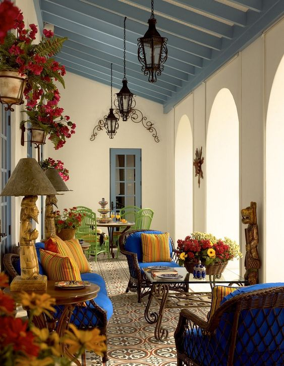

Mexico
Desain interior Meksiko memang tampak fun dengan segala warna yang vibrant. Umumnya, desain interior Meksiko didominasi dengan warna kebumian seperti terracota dan oranye. Selain itu, rumah klasik Meksiko juga menerapkan pencahayaan maksimal dengan jendela besar dan ruang terbuka.
Spanyol
 Desain interior yang satu ini identik dengan gaya Mediterania yang penuh warna. Kesan warm pun semakin terasa dengan konsep cerah dan terbuka bak villa pedesaan. Kesan yang menawan ini pun semakin sempurna dengan berbagai hiasan dan tanaman cantik.
Amerika Classic
 Lantai, rumah bergaya American Classic biasanya memilih menggunakan lantai batu atau lantai kayu. Ini dilakukan untuk
menciptakan tampilan yang alami dan nyaman; ini juga alasan mengapa kita sering dapat menemukan perapian batu bata klasik.
Untuk penutup lantai, orang memilih papan parket dari kayu terang atau dalam nuansa cokelat gelap dengan tekstur kayu yang
nyata. Karpet lebar berwarna tunggal dapat ditemukan di lantai, meskipun ada varian yang lebih kontras – karpet dengan
ornamen etnik.
Lantai, rumah bergaya American Classic biasanya memilih menggunakan lantai batu atau lantai kayu. Ini dilakukan untuk
menciptakan tampilan yang alami dan nyaman; ini juga alasan mengapa kita sering dapat menemukan perapian batu bata klasik.
Untuk penutup lantai, orang memilih papan parket dari kayu terang atau dalam nuansa cokelat gelap dengan tekstur kayu yang
nyata. Karpet lebar berwarna tunggal dapat ditemukan di lantai, meskipun ada varian yang lebih kontras – karpet dengan
ornamen etnik.